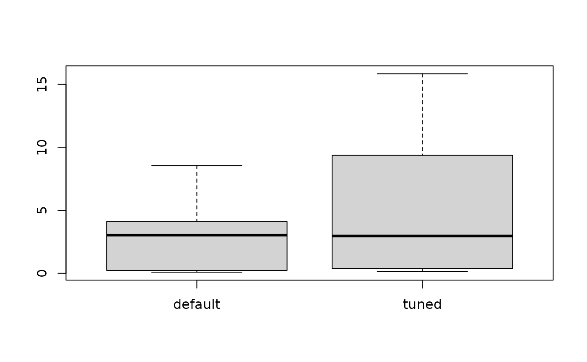

The irace package: Iterated Racing for Automatic Algorithm Configuration
Source:R/irace-package.R
irace-package.RdIterated race is an extension of the Iterated F-race method for the automatic configuration of optimization algorithms, that is, (offline) tuning their parameters by finding the most appropriate settings given a set of instances of an optimization problem. M. López-Ibáñez, J. Dubois-Lacoste, L. Pérez Cáceres, T. Stützle, and M. Birattari (2016) <doi:10.1016/j.orp.2016.09.002>.
References
Manuel López-Ibáñez, Jérémie Dubois-Lacoste, Leslie Pérez Cáceres, Thomas Stützle, and Mauro Birattari. The irace package: Iterated Racing for Automatic Algorithm Configuration. Operations Research Perspectives, 2016. doi:10.1016/j.orp.2016.09.002
Manuel López-Ibáñez, Jérémie Dubois-Lacoste, Thomas Stützle, and Mauro Birattari. The irace package, Iterated Race for Automatic Algorithm Configuration. Technical Report TR/IRIDIA/2011-004, IRIDIA, Université Libre de Bruxelles, Belgium, 2011.
Manuel López-Ibáñez and Thomas Stützle. The Automatic Design of Multi-Objective Ant Colony Optimization Algorithms. IEEE Transactions on Evolutionary Computation, 2012.
See also
irace.main to start irace with a given scenario.
Author
Maintainers: Manuel López-Ibáñez and Leslie Pérez Cáceres irace-package@googlegroups.com
Examples
#######################################################################
# This example illustrates how to tune the parameters of the simulated
# annealing algorithm (SANN) provided by the optim() function in the
# R base package. The goal in this example is to optimize instances of
# the following family:
# f(x) = lambda * f_rastrigin(x) + (1 - lambda) * f_rosenbrock(x)
# where lambda follows a normal distribution whose mean is 0.9 and
# standard deviation is 0.02. f_rastrigin and f_rosenbrock are the
# well-known Rastrigin and Rosenbrock benchmark functions (taken from
# the cmaes package). In this scenario, different instances are given
# by different values of lambda.
#######################################################################
## First we provide an implementation of the functions to be optimized:
f_rosenbrock <- function (x) {
d <- length(x)
z <- x + 1
hz <- z[1:(d - 1)]
tz <- z[2:d]
s <- sum(100 * (hz^2 - tz)^2 + (hz - 1)^2)
return(s)
}
f_rastrigin <- function (x) {
sum(x * x - 10 * cos(2 * pi * x) + 10)
}
## We generate 20 instances (in this case, weights):
weights <- rnorm(20, mean = 0.9, sd = 0.02)
## On this set of instances, we are interested in optimizing two
## parameters of the SANN algorithm: tmax and temp. We setup the
## parameter space as follows:
parameters_table <- '
tmax "" i,log (1, 5000)
temp "" r (0, 100)
'
## We use the irace function readParameters to read this table:
parameters <- readParameters(text = parameters_table)
## Next, we define the function that will evaluate each candidate
## configuration on a single instance. For simplicity, we restrict to
## three-dimensional functions and we set the maximum number of
## iterations of SANN to 1000.
target_runner <- function(experiment, scenario)
{
instance <- experiment$instance
configuration <- experiment$configuration
D <- 3
par <- runif(D, min=-1, max=1)
fn <- function(x) {
weight <- instance
return(weight * f_rastrigin(x) + (1 - weight) * f_rosenbrock(x))
}
res <- stats::optim(par,fn, method="SANN",
control=list(maxit=1000
, tmax = as.numeric(configuration[["tmax"]])
, temp = as.numeric(configuration[["temp"]])
))
## New output interface in irace 2.0. This list may also contain:
## - 'time' if irace is called with 'maxTime'
## - 'error' is a string used to report an error
## - 'outputRaw' is a string used to report the raw output of calls to
## an external program or function.
## - 'call' is a string used to report how target_runner called the
## external program or function.
return(list(cost = res$value))
}
## We define a configuration scenario by setting targetRunner to the
## function define above, instances to the first 10 random weights, and
## a maximum budget of 'maxExperiments' calls to targetRunner.
scenario <- list(targetRunner = target_runner,
instances = weights[1:10],
maxExperiments = 500,
# Do not create a logFile
logFile = "")
## We check that the scenario is valid. This will also try to execute
## target_runner.
checkIraceScenario(scenario, parameters = parameters)
#> # 2022-11-05 17:51:49 UTC: Checking scenario
#> ## irace scenario:
#> scenarioFile = "./scenario.txt"
#> execDir = "/tmp/RtmpTDmVCH/file4dc678962efa/reference"
#> parameterFile = "/tmp/RtmpTDmVCH/file4dc678962efa/reference/parameters.txt"
#> forbiddenExps = NULL = expression()
#> forbiddenFile = ""
#> initConfigurations = NULL
#> configurationsFile = ""
#> logFile = ""
#> recoveryFile = ""
#> instances = c(0.899292645223141, 0.91604054412861, 0.892041879858164, 0.883279740029296, 0.877916539287641, 0.887163819694349, 0.909443580176171, 0.892602339925995, 0.894319221457699, 0.892311032012285)
#> trainInstancesDir = "./Instances"
#> trainInstancesFile = ""
#> sampleInstances = TRUE
#> testInstancesDir = ""
#> testInstancesFile = ""
#> testInstances = NULL
#> testNbElites = 1L
#> testIterationElites = FALSE
#> testType = "friedman"
#> firstTest = 5L
#> eachTest = 1L
#> targetRunner = function (experiment, scenario) { instance <- experiment$instance configuration <- experiment$configuration D <- 3 par <- runif(D, min = -1, max = 1) fn <- function(x) { weight <- instance return(weight * f_rastrigin(x) + (1 - weight) * f_rosenbrock(x)) } res <- stats::optim(par, fn, method = "SANN", control = list(maxit = 1000, tmax = as.numeric(configuration[["tmax"]]), temp = as.numeric(configuration[["temp"]]))) return(list(cost = res$value))}
#> targetRunnerLauncher = ""
#> targetCmdline = "{configurationID} {instanceID} {seed} {instance} {bound} {targetRunnerArgs}"
#> targetRunnerRetries = 0L
#> targetRunnerData = ""
#> targetRunnerParallel = NULL
#> targetEvaluator = NULL
#> deterministic = FALSE
#> maxExperiments = 500L
#> maxTime = 0L
#> budgetEstimation = 0.02
#> minMeasurableTime = 0.01
#> parallel = 0L
#> loadBalancing = TRUE
#> mpi = FALSE
#> batchmode = "0"
#> digits = 4L
#> quiet = FALSE
#> debugLevel = 2L
#> seed = NA_character_
#> softRestart = TRUE
#> softRestartThreshold = 1e-04
#> elitist = TRUE
#> elitistNewInstances = 1L
#> elitistLimit = 2L
#> repairConfiguration = NULL
#> capping = FALSE
#> cappingType = "median"
#> boundType = "candidate"
#> boundMax = NULL
#> boundDigits = 0L
#> boundPar = 1L
#> boundAsTimeout = TRUE
#> postselection = 0
#> aclib = FALSE
#> nbIterations = 0L
#> nbExperimentsPerIteration = 0L
#> minNbSurvival = 0L
#> nbConfigurations = 0L
#> mu = 5L
#> confidence = 0.95
#> ## end of irace scenario
#> # checkIraceScenario(): 'parameters' provided by user. Parameter file '/tmp/RtmpTDmVCH/file4dc678962efa/reference/parameters.txt' will be ignored
#> # 2022-11-05 17:51:49 UTC: Checking target runner.
#> # Executing targetRunner ( 2 times)...
#> # targetRunner returned:
#> [[1]]
#> [[1]]$cost
#> [1] 6.83750950205528
#>
#> [[1]]$time
#> [1] NA
#>
#>
#> [[2]]
#> [[2]]$cost
#> [1] 3.54191356966001
#>
#> [[2]]$time
#> [1] NA
#>
#>
#> # 2022-11-05 17:51:49 UTC: Check successful.
#> [1] TRUE
# \donttest{
## We are now ready to launch irace. We do it by means of the irace
## function. The function will print information about its
## progress. This may require a few minutes, so it is not run by default.
tuned_confs <- irace(scenario = scenario, parameters = parameters)
#> # 2022-11-05 17:51:49 UTC: Initialization
#> # Elitist race
#> # Elitist new instances: 1
#> # Elitist limit: 2
#> # nbIterations: 3
#> # minNbSurvival: 3
#> # nbParameters: 2
#> # seed: 787347079
#> # confidence level: 0.95
#> # budget: 500
#> # mu: 5
#> # deterministic: FALSE
#>
#> # 2022-11-05 17:51:49 UTC: Iteration 1 of 3
#> # experimentsUsedSoFar: 0
#> # remainingBudget: 500
#> # currentBudget: 166
#> # nbConfigurations: 27
#> # Markers:
#> x No test is performed.
#> c Configurations are discarded only due to capping.
#> - The test is performed and some configurations are discarded.
#> = The test is performed but no configuration is discarded.
#> ! The test is performed and configurations could be discarded but elite configurations are preserved.
#> . All alive configurations are elite and nothing is discarded
#>
#> +-+-----------+-----------+-----------+----------------+-----------+--------+-----+----+------+
#> | | Instance| Alive| Best| Mean best| Exp so far| W time| rho|KenW| Qvar|
#> +-+-----------+-----------+-----------+----------------+-----------+--------+-----+----+------+
#> |x| 1| 27| 16| 0.03288107003| 27|00:00:00| NA| NA| NA|
#> |x| 2| 27| 7| 0.4671295966| 54|00:00:00|+0.40|0.70|0.4626|
#> |x| 3| 27| 5| 0.3338281044| 81|00:00:00|+0.40|0.60|0.5567|
#> |x| 4| 27| 5| 0.9887483076| 108|00:00:00|+0.33|0.50|0.6329|
#> |-| 5| 10| 5| 0.8564644712| 135|00:00:00|+0.01|0.21|0.8336|
#> |=| 6| 10| 18| 1.268522237| 145|00:00:00|+0.09|0.24|0.7782|
#> |=| 7| 10| 5| 1.149849796| 155|00:00:00|+0.12|0.24|0.7572|
#> +-+-----------+-----------+-----------+----------------+-----------+--------+-----+----+------+
#> Best-so-far configuration: 5 mean value: 1.149849796
#> Description of the best-so-far configuration:
#> .ID. tmax temp .PARENT.
#> 5 5 5 45.4164 NA
#>
#> # 2022-11-05 17:51:51 UTC: Elite configurations (first number is the configuration ID; listed from best to worst according to the sum of ranks):
#> tmax temp
#> 5 5 45.4164
#> 11 97 30.2762
#> 18 1 27.4914
#> # 2022-11-05 17:51:51 UTC: Iteration 2 of 3
#> # experimentsUsedSoFar: 155
#> # remainingBudget: 345
#> # currentBudget: 172
#> # nbConfigurations: 24
#> # Markers:
#> x No test is performed.
#> c Configurations are discarded only due to capping.
#> - The test is performed and some configurations are discarded.
#> = The test is performed but no configuration is discarded.
#> ! The test is performed and configurations could be discarded but elite configurations are preserved.
#> . All alive configurations are elite and nothing is discarded
#>
#> +-+-----------+-----------+-----------+----------------+-----------+--------+-----+----+------+
#> | | Instance| Alive| Best| Mean best| Exp so far| W time| rho|KenW| Qvar|
#> +-+-----------+-----------+-----------+----------------+-----------+--------+-----+----+------+
#> |x| 8| 24| 39| 0.004078828084| 24|00:00:00| NA| NA| NA|
#> |x| 6| 24| 29| 0.1625775769| 45|00:00:00|+0.14|0.57|1.0364|
#> |x| 5| 24| 18| 0.2140250983| 66|00:00:00|+0.11|0.41|0.9672|
#> |x| 7| 24| 18| 0.3416420907| 87|00:00:00|+0.06|0.30|0.9643|
#> |=| 3| 24| 18| 0.2968260507| 108|00:00:00|+0.05|0.24|0.9882|
#> |=| 4| 24| 18| 0.7436263305| 129|00:00:00|-0.01|0.16|0.9855|
#> |=| 2| 24| 11| 1.055180493| 150|00:00:00|+0.01|0.15|0.9727|
#> |=| 1| 24| 18| 1.104567940| 171|00:00:00|+0.02|0.14|0.9400|
#> +-+-----------+-----------+-----------+----------------+-----------+--------+-----+----+------+
#> Best-so-far configuration: 18 mean value: 1.104567940
#> Description of the best-so-far configuration:
#> .ID. tmax temp .PARENT.
#> 18 18 1 27.4914 NA
#>
#> # 2022-11-05 17:51:52 UTC: Elite configurations (first number is the configuration ID; listed from best to worst according to the sum of ranks):
#> tmax temp
#> 18 1 27.4914
#> 5 5 45.4164
#> 11 97 30.2762
#> # 2022-11-05 17:51:52 UTC: Iteration 3 of 3
#> # experimentsUsedSoFar: 326
#> # remainingBudget: 174
#> # currentBudget: 174
#> # nbConfigurations: 22
#> # Markers:
#> x No test is performed.
#> c Configurations are discarded only due to capping.
#> - The test is performed and some configurations are discarded.
#> = The test is performed but no configuration is discarded.
#> ! The test is performed and configurations could be discarded but elite configurations are preserved.
#> . All alive configurations are elite and nothing is discarded
#>
#> +-+-----------+-----------+-----------+----------------+-----------+--------+-----+----+------+
#> | | Instance| Alive| Best| Mean best| Exp so far| W time| rho|KenW| Qvar|
#> +-+-----------+-----------+-----------+----------------+-----------+--------+-----+----+------+
#> |x| 9| 22| 53| 0.2166238406| 22|00:00:00| NA| NA| NA|
#> |x| 5| 22| 56| 0.2323511882| 41|00:00:00|+0.06|0.53|0.9684|
#> |x| 1| 22| 57| 1.168648859| 60|00:00:00|+0.08|0.39|0.8513|
#> |x| 8| 22| 5| 0.5798259221| 79|00:00:00|+0.07|0.30|0.9352|
#> |=| 4| 22| 61| 1.119395184| 98|00:00:00|+0.09|0.28|0.8790|
#> |=| 6| 22| 54| 1.129725603| 117|00:00:00|+0.07|0.23|0.9200|
#> |-| 7| 16| 54| 1.020215528| 136|00:00:00|-0.04|0.11|1.0060|
#> |=| 2| 16| 61| 1.115485013| 149|00:00:00|-0.03|0.10|0.9832|
#> |=| 3| 16| 61| 1.358319682| 162|00:00:00|-0.01|0.10|0.9812|
#> +-+-----------+-----------+-----------+----------------+-----------+--------+-----+----+------+
#> Best-so-far configuration: 61 mean value: 1.358319682
#> Description of the best-so-far configuration:
#> .ID. tmax temp .PARENT.
#> 61 61 102 28.4651 11
#>
#> # 2022-11-05 17:51:54 UTC: Elite configurations (first number is the configuration ID; listed from best to worst according to the sum of ranks):
#> tmax temp
#> 61 102 28.4651
#> 5 5 45.4164
#> 56 2 32.0162
#> # 2022-11-05 17:51:54 UTC: Stopped because there is not enough budget left to race more than the minimum (3)
#> # You may either increase the budget or set 'minNbSurvival' to a lower value
#> # Iteration: 4
#> # nbIterations: 4
#> # experimentsUsedSoFar: 488
#> # timeUsed: 0
#> # remainingBudget: 12
#> # currentBudget: 12
#> # number of elites: 3
#> # nbConfigurations: 3
#> # Total CPU user time: 5.001, CPU sys time: 0, Wall-clock time: 5.002
## We can print the best configurations found by irace as follows:
configurations.print(tuned_confs)
#> tmax temp
#> 61 102 28.4651
#> 5 5 45.4164
#> 56 2 32.0162
## We can evaluate the quality of the best configuration found by
## irace versus the default configuration of the SANN algorithm on
## the other 10 instances previously generated.
## To do so, first we apply the default configuration of the SANN
## algorithm to these instances:
test <- function(configuration)
{
res <- lapply(weights[11:20],
function(x) target_runner(
experiment = list(instance = x,
configuration = configuration),
scenario = scenario))
return (sapply(res, getElement, name = "cost"))
}
default <- test(data.frame(tmax=10, temp=10))
## We extract and apply the winning configuration found by irace
## to these instances:
tuned <- test(removeConfigurationsMetaData(tuned_confs[1,]))
## Finally, we can compare using a boxplot the quality obtained with the
## default parametrization of SANN and the quality obtained with the
## best configuration found by irace.
boxplot(list(default = default, tuned = tuned))

# }